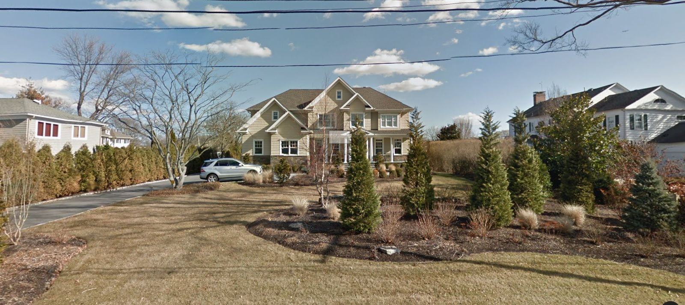

Lot
0.62 ac
27,217 sq ft
A 0.62-acre lot with a 2009 house in West Islip, zoned A (11,250 sq ft lots). Listed at $3,999,900 and the listing expired without a sale or a relist. Under town zoning and the county septic rule it holds 2 house lots. Last deed recorded 2008.

| Step | Figure | Basis |
|---|---|---|
| Lot area | 27,217 sq ft · 0.62 ac | County tax map parcel outline |
| Wetlands on the lot | None mapped | County freshwater + tidal wetland maps |
| Net buildable area | 27,217 sq ft | |
| Zoning minimum per house | 11,250 sq ft | A · Islip Zoning Ordinance §68-81(A) · Residence A |
| Septic minimum per house | No cap | In Southwest Sewer District |
| Binding rule | Town zoning | 11,250 sq ft per house |
| House lots by right | 2 | 2–3 lots usually work with a flag lot or shared drive |
What this means: the lot divides into 2 conforming house lots before roads, frontage and flag-lot rules. Lots under 40,000 sq ft need public water (§760-609). A surveyor's yield map confirms the count.
Why now: the owner already decided to sell and the market didn't take it at $4M. The listing agreement is over, so the owner can talk to anyone.
| Result |
|---|
| No other Suffolk parcel under this owner's name and mailing address. |
| Address | Lot | Use | Owner |
|---|---|---|---|
| No street address | 4.20 ac | Class 315 | Individual |
| 10 Magoun Road | 0.68 ac | One-family home | Individual · lives there |
| 153 Eaton Lane | 0.68 ac | One-family home | — |
| 4 Magoun Road | 0.36 ac | One-family home | Trust · lives there |
| 141 Eaton Lane | 0.28 ac | One-family home | LLC · lives there |
| Address | Lot | 2025 market value | Distance |
|---|---|---|---|
| 221 Sequams Lane Center | 0.29 ac | — | 0.25 mi |
| 107 Sequams Lane West | 0.23 ac | — | 0.27 mi |
| 258 Sequams Lane Center | 0.18 ac | — | 0.34 mi |
| 18 Larkspur Drive | 0.29 ac | — | 0.57 mi |
4 new houses went up on vacant lots within 1.5 miles since 2021. Assessor values run behind sale prices.
| Where | Before | After | Built so far | Distance |
|---|---|---|---|---|
| 185 Willetts LnIslip | 1 parcel | 2 lots | 2 houses · 0 vacant | 0.38 mi |
| 113 Wilherm LnIslip | 1 parcel | 2 lots | 1 house · 1 vacant | 0.46 mi |
| 27 Stowe AveBabylon | 1 parcel | 2 lots | 2 houses · 0 vacant | 1.42 mi |
| 12 Lafayette RdBabylon | 1 parcel | 2 lots | 2 houses · 0 vacant | 2.2 mi |
| 50 Meucci AvBabylon | 1 parcel | 2 lots | 2 houses · 0 vacant | 2.45 mi |
The offer that fits: buy the parcel at land-split value from an owner who already tried to sell, divide it into 2 conforming lots, and sell new houses into a market where new construction on vacant lots nearby carries strong values.
Estimates Lot counts assume the full parcel minus mapped wetlands, before roads and frontage, and need a surveyor's yield map. Owner names are masked; the full record, the phone and the trace are walked through on a call. Pulled Oct 15, 2026 from Suffolk County and New York State public records, town zoning maps and an Oct 4 MLS snapshot.